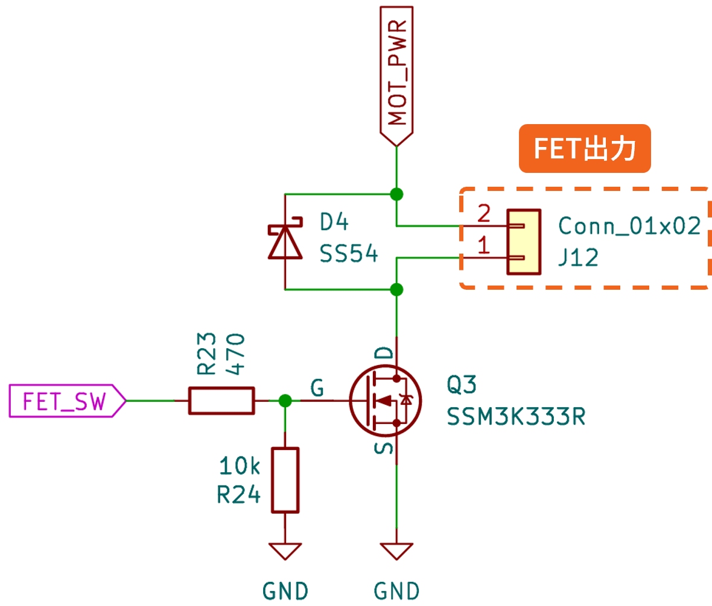

UGOKU Lab
FET出力（詳細）

Nch MOSFET（SSM3K333R）によるローサイド出力です。
項目
仕様
使用素子
MOSFET（SSM3K333R）
電圧
5V系統で駆動（外部電源に接続する場合は外部電源電圧に依存） — 詳細はデータシート参照
連続電流
要確認（SSM3K333R のデータシートを参照してください）
出力タイプ
Low-side スイッチ（接地側でのオン/オフ）
備考
誘導負荷（ソレノイド、リレー等）を駆動する際はフライバック対策が必要。定格はデバイスデータシート参照
マニュアルに戻る